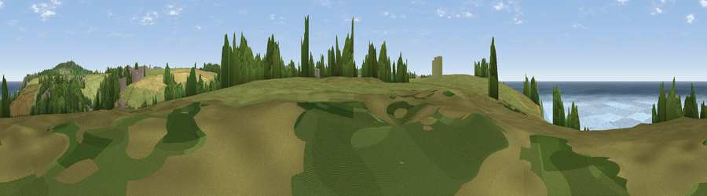

Viewpoint near Porthtowan
#8104 in England · top 19% of its area beats it · near PorthtowanWhere it is
The exact computed spot (SW 69100 47638). Click the marker for map links.
The view, rendered

A 360° render of this exact spot computed from the terrain model, tree cover and land cover — summer colours, afternoon light, calibrated against photographs of famous viewpoints. Real trees, hedges and buildings will differ in detail.
The panorama
Grey silhouette: terrain skyline in each direction (720 bearings, Earth curvature and refraction included). Dashed green: skyline with trees (+15 m) and buildings (+8 m) as obstacles. Blue strip: how far the ground is visible on each bearing.
Where the view opens
Wedge length = distance to the farthest visible ground on that bearing (vegetation-aware). Rings at 10, 25 and 50 km.
What fills the view
41% water · 38% grassland · 13% woodland · 6% cropland · 2% built-up
Angular shares of the visible panorama (visual magnitude), not map area. Landscape diversity 0.54 (0–1 Shannon).
Key numbers
More beautiful places nearby
The staircase of upgrades: each row has a higher view potential than everything closer. Driving times are estimates from straight-line distance, calibrated against real road routing — check an actual route before setting out.
| Place | Direction | Drive | Score |
|---|---|---|---|
| Viewpoint near Porthtowan | NNE · 2 km | ~5 min | 67.3 |
| Viewpoint near St. Agnes | NNE · 2 km | ~6 min | 68.2 |
| Viewpoint near St. Agnes | NNE · 3 km | ~7 min | 71.6 |
| St Agnes Beacon | NE · 3 km | ~8 min | 86.1 |
| Rosewall Hill | WSW · 22 km | ~37 min | 88.0 |
| Viewpoint near Combe Martin | NE · 135 km | ~159 min | 88.9 |
| Holdstone Hill | NE · 136 km | ~160 min | 90.2 |
| The Knoll | ENE · 188 km | ~208 min | 91.0 |
50.28342, -5.24251 · source: screening · position refined by local search. Computed location — check access rights before visiting.